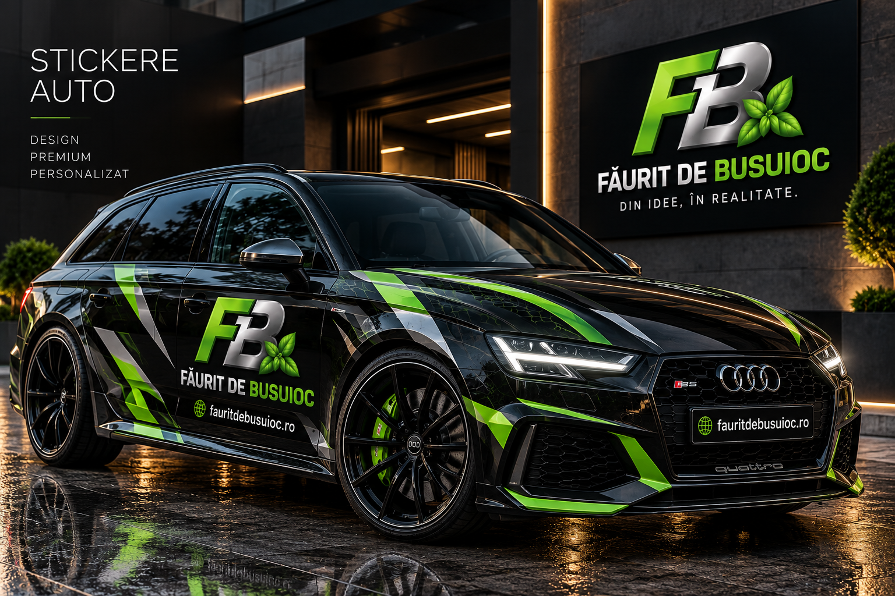

Stickere capotă
Design personalizat pentru capotă, adaptat formelor și dimensiunilor mașinii.
Personalizare auto cu design atent lucrat: stickere pentru capotă și portiere, branding pentru firme, lunetă, grafică sportivă și stickere magnetice. De la idee și mockup până la produsul final.

Design curat, premium și adaptat fiecărei mașini, fie că vrei un detaliu discret sau branding vizibil pentru firmă.
Design personalizat pentru capotă, adaptat formelor și dimensiunilor mașinii.
Logo, grafică, texte sau elemente decorative pentru una sau mai multe portiere.
Logo, site, telefon și identitate vizuală pentru mașini comerciale și dube.
Grafică și texte pregătite pentru zonele vitrate, în funcție de material și proiect.
Linii, forme și accente premium pentru un aspect mai agresiv sau decorativ.
Personalizate, detașabile și reutilizabile — ideale pentru firme și reclamă mobilă.
O soluție premium pentru firme, profesioniști și mașini folosite atât personal, cât și pentru activitate. Personalizăm magnetul cu logo, site, telefon sau mesajul dorit.
Proces simplu, cu vizualizare înainte de realizare.
Ne trimiți fotografii clare ale mașinii și dimensiunile zonei dorite.
Construim conceptul în stilul cerut și îl adaptăm mașinii tale.
Vezi cum arată proiectul pe mașină înainte de realizarea finală.
După aprobare, designul este pregătit la dimensiunile stabilite.
Modele demonstrative create pentru a arăta stilurile și tipurile de personalizare disponibile.

Branding premium adaptat formei capotei.

Logo și grafică integrate elegant pe caroserie.

Mașina devine un suport vizual pentru afacerea ta.

Logo, site și informații prezentate clar și premium.

Accente grafice pentru un look puternic și distinct.
Detașabil și reutilizabil, fără branding permanent.

Vizibilitate profesională pentru activitatea ta.
Concept premium cu identitate vizuală unitară.
Spune-ne ce vrei să personalizezi și ce stil îți place. Pregătim varianta vizuală și discutăm detaliile direct pe WhatsApp.